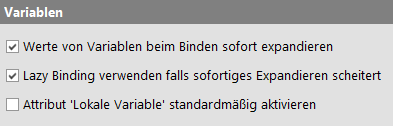

| Version 6.0.3 |
Die folgenden Optionen beziehen sich auf das Binden von Variablen:
|
|  | ||
|
| Abbildung 37.38: Variablen Optionen | ||
Wird ein Satz von Variablen auf einen Stapel gelegt, können weitere Variablen-Bezüge in deren Werten entweder sofort expandiert werden ("Immediate Binding"), oder unverändert abgelegt und erst bei Bedarf aufgelöst werden ("Lazy Binding"). Dies ist im Detail in Abschnitt 6.7 beschrieben.
Für Immediate Binding schalten Sie diese Option ein, für Lazy Binding aus.
Alte Tests, die auf der Grundlage von Lazy Binding entwickelt wurden, können gegebenenfalls mit dem neuen Standard von Immediate Binding fehlschlagen. Ist diese Option aktiviert, werden Variablen, die auf Grund von Referenzen zu noch undefinierten Variablen nicht sofort gebunden werden können, als Lazy Binding behandelt. Die Warnung, die in diesem Zusammenhang protokolliert wird, können Sie loswerden indem Sie einfach in der Definition der betreffenden Variablen explizit Lazy Binding mittels '$_' verwenden. Nähere Informationen hierzu finden Sie in Abschnitt 6.7.
Viele Knoten haben ein Attribut 'Lokale Variable', welches bestimmt, ob eine Ergebnisvariable lokal erstellt, oder bei den globalen Variablen abgelegt wird. Ist diese Option aktiviert, wird für neu erstellte Knoten das Attribut 'Lokale Variable' gesetzt.
Des weiteren können hier verschiedene Arten von Variablen definiert werden. Diese werden im Detail in Kapitel 6 beschrieben.
| Letzte Änderung: 6.9.2022 Copyright © 1999-2022 Quality First Software GmbH |